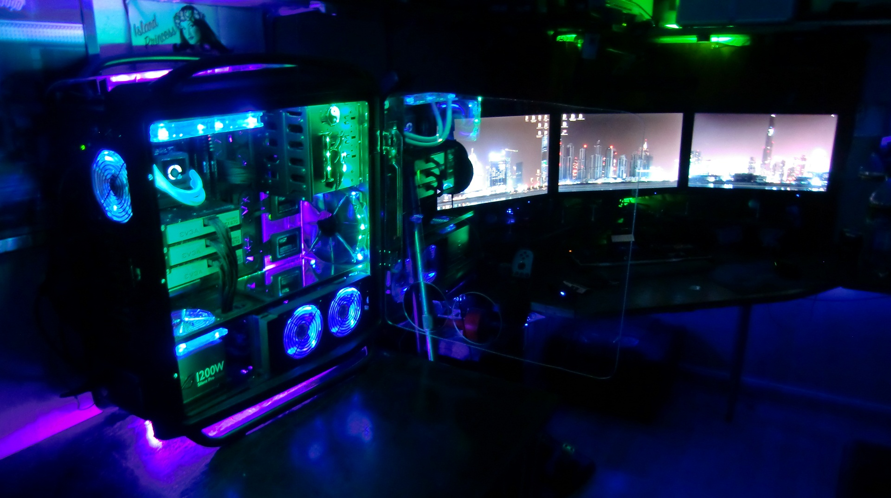

P.C. Gaming in a nutshell
"PC games, also known as computer games or personal computer games, are video games played on a personal computer rather than a dedicated video game console or arcade machine. Their defining characteristics include a more diverse and user determined gaming hardware and software, and a generally greater capacity in input, processing, and video output.
Home computer games became popular following the video game crash of 1983 leading to the era of the "bedroom coder". In the 1990s, PC games lost mass-market traction to console games before enjoying a resurgence in the mid-2000s through digital distribution.
Newzoo reports that the PC gaming sector is the third largest (and estimated in decline), with the consoles second largest, and across all platforms as of 2016, 2.2 billion gamers generate US$101.1 billion in revenue (i.e. all numbers exclude hardware costs), and "Digital game revenues will account for $94.4 billion or 87% of the global market. Mobile is the most lucrative segment, with smartphone and tablet gaming growing 19% year on year to $46.1 billion, claiming 42% of the market. In 2020, mobile gaming will represent just more than half of the total games market. ... China expected to generate $27.5 billion, or one-quarter of all revenues in 2017."[3][4] PC is considered synonymous (by them and others) with IBM PC compatible systems; while mobile computers – smartphones and tablets, such as those running Android or iOS – are also personal computers in the general sense. The "APAC" region is estimated to generate $46.6 billion in 2016, or 47% of total global game revenues (note, not only "PC" games). China alone accounts for half of APAC's revenues, reaching $24.4 billion, cementing its place as the largest games market in the world, ahead of the US's anticipated market size of $23.5 billion. China is expected to have 53% of revenues from mobile in 2017 (46% in 2016).
The uncoordinated nature of the PC game market and its lack of physical media make precisely assessing its size difficult."